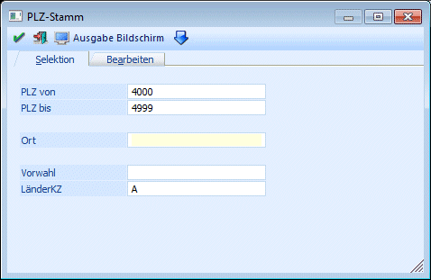
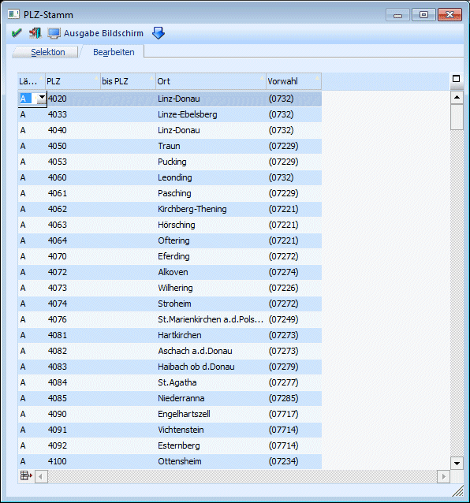
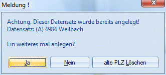

Im Menüpunkt
1 WinLine START
1 Optionen
1 Postleitzahlen
können beliebig viele Postleitzahlen, Orte, Vorwahlen und dergleichen angelegt und gepflegt werden.
Das Fenster ist in 2 Register unterteilt, die verschiedene Funktionen haben:
Selektion
Im Register Selektion können Einschränkungen vorgenommen werden, die für die Anzeige des nachfolgenden Registers gelten.

Ø PLZ von / PLZ bis
Eingabe des Postleitzahlenbereiches, der für den eingegebenen Ort bzw. die Vorwahl gilt. Pro Postleitzahl können auch mehrere Orte erfasst werden.
Ø Ort
Eingabe des Ortes entsprechend der Postleitzahl
Ø Vorwahl
Eingabe der zutreffenden Vorwahl
Ø LänderKZ
Eingabe des internat. Länderkennzeichens, 10stellig alphanumerisch
Durch Drücken der F5-Taste wird in das nächste Register gewechselt, wo alle Postleitzahlen entsprechend der Einstellung angezeigt werden. Bei diesem Wechsel wird ein Statusfenster angezeigt, dass den Fortschritt des Füllens der Tabelle anzeigt, und in dem gegebenenfalls mittels Abbruch-Button das Befüllen abgebrochen werden kann. Durch Drücken der ESC-Taste wird das Fenster geschlossen.
Bearbeiten
In diesem Register können Postleitzahlen bearbeitet werden. Welche Postleitzahlen in der Tabelle angezeigt werden, wird durch die Einstellung im Register Selektion gesteuert.

Folgende Felder können bearbeitet werden:
Ø Länderkennzeichen
Aus der Auswahllistbox können alle Länderkennzeichen ausgewählt werden, die über den Menüpunkt Optionen/Länderstamm angelegt wurden.
Ø PLZ / PLZ bis
Eingabe des Postleitzahlenbereiches, der für den eingegebenen Ort bzw. die Vorwahl gilt. Pro Postleitzahl können auch mehrere Orte erfasst werden.
Ø Ort
Eingabe des Ortes entsprechend der Postleitzahl
Ø Vorwahl
Eingabe der zutreffenden Vorwahl
Neue PLZ können einfach angelegt werden, indem man die gewünschte Information in die nächste freie Zeile einträgt.
Ist die Kombination aus Länderkennzeichen und Postleitzahl bereits vorhanden, dann wird folgende Meldung ausgegeben:

Wird die Meldung mit JA bestätigt, dann kann die PLZ ein weiteres Mal angelegt werden (was bei machen PLZ sinnvoll ist, weil diese doppelt vergeben werden bzw. mehrere Orte unter einer PLZ zu finden sind). Wird die Meldung mit NEIN bestätigt, dann muss eine andere PLZ eingetragen werden. Wenn die Meldung mit "alte PLZ Löschen" bestätigt wird, dann wird die vorhandene PLZ gelöscht und es kann die neue PLZ weiter bearbeitet werden.
Buttons
Ø  Entfernen (unterhalb der Tabelle)
Entfernen (unterhalb der Tabelle)
Durch Anklicken des Entfernen-Buttons wird der gerade aktive Eintrag aus der Tabelle gelöscht.
Ø  OK
OK
Durch Drücken der F5-Taste bzw. des OK-Buttons werden alle vorgenommenen Einstellungen gespeichert.
Ø  Ende
Ende
Durch Drücken der ESC-Taste oder des Ende-Buttons wird das Fenster geschlossen.
Ø  Ausgabe Drucker / Ausgabe Bildschirm
Ausgabe Drucker / Ausgabe Bildschirm
Durch Anwählen dieses Buttons, bzw. Auswahl des Eintrages "Ausgabe Drucker / Ausgabe Bildschirm" können alle Postleitzahlen die den im Register Selektion vorgenommenen Einstellungen entsprechen ausgedruckt werden.